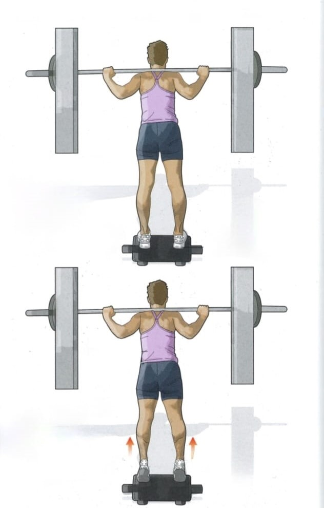
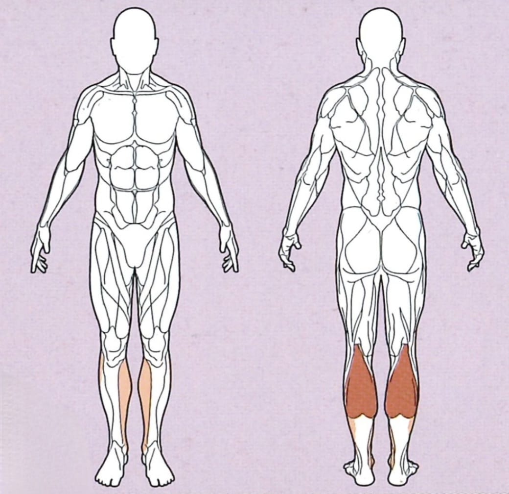
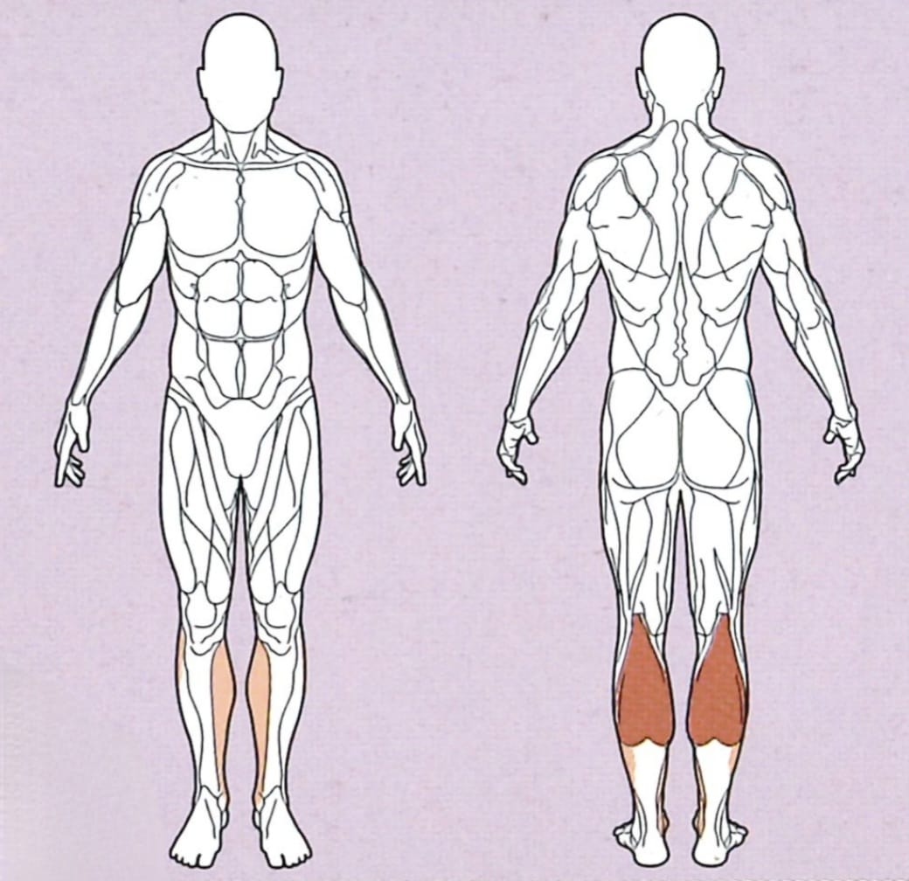

Wadenheben



Ausgangsposition
● Nutze eine 20kg Gewichtsplatte als Plattform
● Trainiere entweder mit deinem Körpergewicht, oder wie in der Grafik gezeigt an der Smith-machine
Ausführung
Stelle dich mit den Fußballen auf die Plattform, lass deine Fersen ungestützt.
Die Hantel sollte wie in der Grafik gezeigt auf deinen Schultern aufliegen, wenn du mit geradem Rücken
darunter stehst
Rückführung
Hebe nun deine Fersen an, so weit wie es geht, und kehre anschließend langsam in die Ausgangsposition zurück.